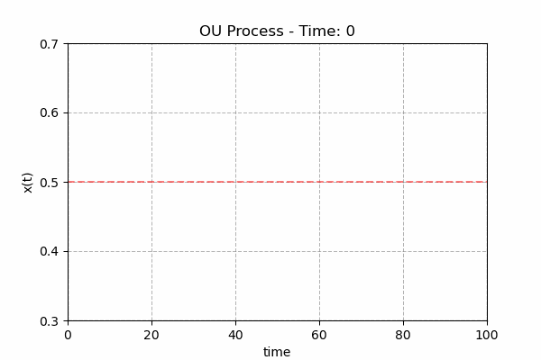

2026 KBO Preseason Report - 기술편, 아니 계산편에 오신 걸 환영합니다.
이 글은 제가 전에 결과편에서 보여준 결과들이 어떤 연유에서 나왔는지를 독자 여러분께 간단하게 설명하는 걸 목표로 합니다. 특히나 이 글이 필요한 이유는, 제가 팬그래프와 같이 뎁스 차트를 가지고 있지 않은 상태에서 여러 ‘몸 비틀기’를 통해 시즌 예상 수치를 시뮬레이션 할 수 밖에 없기 때문이기도 합니다. 그렇다면 가장 근본적인 질문부터 시작하기로 합시다. ‘그 전 시즌 기록으로 다음 시즌을 예측할 수 있을까?’
생각해 봅시다. 전 시즌 기록과 이번 시즌 기록은 어느 정도 상관 관계가 있습니다. 뎁스 차트를 보지 않아도 경험적으로 그렇다는 걸 우리는 알고 있죠. 2000시즌 이후 기록만 본다면, 상관계수가 약 0.5 정도 됩니다. (참고로, 2015시즌 이후로만 한정한다면 이 값이 0.45 정도로 조금 떨어지는 편입니다.) 일반적인 기준에서 중간 정도의 상관 관계라 할 수 있겠습니다. 하지만 역시나 많은 부분을 시즌간 승률 상관관계로 설명하지 못합니다. 당연히, 이 작업을 진행한다고 해서 제가 이 ‘설명하지 못 하는 부분’을 교묘하게 설명할 방법 같은 건 없습니다. 다시 말해, 이 ‘설명하지 못 하는 부분’은 현재 상태에서는 구름과 같은 상황입니다. 뎁스 차트를 만들 생각이 없으니까요. 그렇다면, 제가 가진 선택지는 무작위 밖에 없습니다. 그러면, 여기에서 하나 생각나지 않습니까? 랜덤 워크(Random Walk)가 말입니다.
랜덤 워크는 시간이 지남에 따라 임의적으로 변화하는 확률 과정(stochastic process)으로 이전 위치와 독립적으로 다음 단계의 이동 방향, 거리가 무작위로 움직이는 모델입니다. 일반적으로 가장 자주 랜덤 워크를 설명하는 예시로 브라운 운동(Brownian Motion)을 들곤 합니다. 브라운 운동은 유체 속의 미소입자들이 외부의 간섭이 없음에도 불구하고 불규칙적으로 이동하는 현상인데, 이를 설명하는 모델로 랜덤 워크를 도입해 많이 설명하곤 하죠. 여기에서 중요한 건 ‘무작위’적이란 겁니다. 이전 이동 결과와는 독립적이기에, 단순히 과거 움직임만으로 미래의 움직임을 예상할 수 없는 프로세스입니다.
생각해 봅시다. 전 시즌 기록과 이번 시즌 기록이 어느 정도 연관돼 있다 하더라도 그것만으로 설명할 수 없는 부분은 많습니다. 우선 선수의 이동을 들 수 있습니다. 거기에다가 그 선수의 부상, 부진 같은 것은 예상할 수가 없죠. 이런 건 사실 ‘무작위’라고 봐도 무리가 없습니다. 그렇기에 전 이런 ‘노이즈’들은 무작위로 생각하기로 한 겁니다. ‘랜덤 워크’죠.
하지만 제가 얘기했듯이, 그 전 시즌의 성적과 다음 시즌의 성적은 어느 정도 설명력이 있습니다. 상관 계수로만 따지만 0.5 정도일 정도죠. 그렇다면 이것을 랜덤 워크와 결합할 필요가 있습니다. 이 때 필요한 개념이 ‘복원력’입니다.
그렇습니다. 복원력. 아무리 대단한 팀이라도 항상 승률이 6할일 수는 없고, 아무리 나쁜 팀이라도 항상 승률이 4할일 수는 없습니다. 야구는 애초에 그렇게 만들어져 있지 않습니다. 그렇다면, 이건 복원력이 작용하는 계(system)라 생각할 수 있습니다. 그러니 단순한 무작위로만 움직이는 랜덤 워크는 아닙니다. 이런 복원력이 작용하는 랜덤 워크를 다음과 같이 모델화 할 수 있습니다.
$$dx_{t} = \theta(m-x_{t}) + \sigma \cdot dW_{t}$$

이를 오른슈타인-울렌벡 과정(Ornstein-Uhlenbeck process)이라고 합니다. 여기에서 $\theta$가 우리가 말한 ‘복원력’, $m$은 $x_{t}$의 (긴 시간) 평균, 그리고 $W_{t}$는 위너 과정(Wiener process)이라고 하는데, 다른 말로 하면 이 부분이 바로 그 브라운 모션 파트입니다. 다르게 보면, 노이즈 항이죠. 이 식을 잘 살펴보면 왜 $\theta$가 복원력인지 알 수 있을 겁니다. 노이즈를 제거하고 본다면(평균을 내 본다면 당연히 0이 되겠죠.) $x_{t}$가 $m$보다 큰 경우 $dx_{t}$는 0보다 작습니다. 당연히 $x_{t+1}$이 $x_{t}$보다 작아질 확률이 높습니다. 만약 $x_{t}$가 $m$보다 작다면? 반대 상황이겠죠. $m$에 벗어날 수록 $m$에 가까워지게 작용한다는 얘기입니다. 그리고 만약 노이즈가 없는 상황이라면 아주 긴 시간이 지난 후에는 $x_{t}$가 $m$으로 안정화 될 겁니다. 스프링을 생각하시면 됩니다. 균형점에서 멀어지면 균형점으로 돌아가려는 성질을 가지고 있죠.
그 다음에 나오는 $\sigma\cdot dW_{t}$는 우리 모델에서는 단순한 노이즈라고 볼 수 있습니다. 물론, 이 무작위의 크기도 어느 정도 제약 조건이 필요합니다. 이 경우, 우리의 복원력 $\theta$가 설명하지 못하는 잔차(residual)가 될 것입니다. 좀 더 정확히는, 그 잔차들만큼의 표준편차를 가지는 정규분포로($N(0,\sigma)$)입니다. $\theta$는 $x_{t}=\theta \cdot x_{t-1} + \epsilon$을 통해 구할 수 있습니다.(최소제곱법에 의한 결과를 말합니다.)
2000~2025시즌 기록을 통해 봤을 때, KBO 팀들의 복원력 계수 $\theta$는 대부분 0.3~0.8 사이의 값을 보여줍니다. 만약 복원력 계수 $\theta$가 큰 경우 관성이 큰 팀일 것이고, 작다면 관성이 작고 팀의 평균 상태로 돌아오려는 경향이 강한 팀이라 할 수 있습니다. 예를 들어, 삼성의 복원력 계수 $\theta$는 0.3991로 계산됐는데, 이는 리그 평균 $\theta$ 0.4940에 비해 많이 작은 값입니다. 삼성의 역사를 보시면 아시겠지만, KBO 역사상 가장 긴 포스트시즌 연속 진출 기록을 가지고 있죠. 거기다가 2016년 이후 긴 암흑기를 거치기도 했고요. 그것이 삼성의 복원력 계수 $\theta$를 작게 만들었습니다. 반면에 KIA의 복원력 계수 $\theta$는 0.826에 달할 정도로 크게 계산됐습니다. 다들 아시겠지만, 21세기 KIA는 전 시즌 우승했다고 다음 시즌 성적을 예측할 수 없는 '전형'이었다는 걸 고려해 본다면, 당연히 복원력이 클 거라거 예측할 수 있습니다. 하지만 그런 '역사'들이 있다 하더라도, 문제는 있습니다. 이걸 어느 정도 믿어야 할까요? 여기에서 신뢰도(Credibility) 문제가 등장합니다.
전 시즌 기록을 기준으로 다음 시즌을 본다고 해도, KBO 팀들의 역사가 짧다는 문제가 있다는 걸 본능적으로 알 수 있을 겁니다. 아무리 오래된 프랜차이즈라 해도 50년이 안 된 리그입니다. 그렇기 때문에 이 팀들의 복원력을 얼마나 믿을 수 있냐는 문제가 있습니다. 다시 말해, 이 팀들의 역사를 통해 얻어낸 복원력 계수 $\theta$가 신뢰할만한 값이냐는 문제입니다. 또, 다른 방면으로는 이 팀들의 '긴 기간(long term)' 평균을 얼마나 신뢰할 수 있냐는 문제도 있습니다. 하지만 그렇다고 이 팀들의 특징이 아주 없는 것은 아니거든요. 우리 모두가 인정하는 명문팀이 이미 존재하는 리그입니다. 그렇기 때문에, 각 팀의 복원력 계수 $\theta$, 그리고 평균 승률과 리그 평균 복원력 계수 $\theta$, 리그 평균 승률을 연계하여 각 팀의 특징적 계수들을 얻어내는 것이 훨씬 효과적인 생각일 것입니다. 다시 말해, 다음과 같이 생각하는 것입니다.
$$\begin{aligned} \theta_{new} &= w_{\theta}\cdot\theta_{team} + (1 - w_{\theta})\cdot\theta_{league} \\\\ W\%_{new} &= w_{m}\cdot W\%_{team} + (1 - w_{m})\cdot 0.5 \end{aligned}$$그렇다면 이제 가중치 $w$를 얻어야 합니다. 이 가중치를 얻어낼 때, 보험 계리사들은 아주 간단하면서도 효과적인 모델을 알고 있습니다. 바로 ‘뷜만 신뢰도 모델(Bühlmann’s Credibility Model)’을 말입니다.
뷜만 신뢰도 모델을 통해 우리가 얻고 싶은 가중치는 다음과 같이 기술할 수 있습니다.
$$\begin{aligned}w&=\frac{n}{n+K} \\\\ K&=\frac{E[Var(X|\theta)]}{Var[E(X|\theta)]}\end{aligned}$$위 식에서 n은 관찰한 연수를 의미합니다.
좀 더 자세한 사항을 알고 싶으시겠지만, 이는 증명이 들어가야 하는 문제라 여러분들에게 바로 설명하긴 복잡합니다. (보고 싶으신 분들은 링크를 걸어 두겠습니다.) 간단히 설명드리자면, 제가 위에서 설명한 복원력 계수 $\theta$가 가중치 $w$에 대한 1차식이라면, 팀의 복원력 계수 $\theta_{team}$에 대한 1차식들과 리그 복원력 계수 $\theta_{league}$에 대한 최소제곱법(Least Square Method)을 통해 얻어내는 값입니다. 보통 이 식은 보험 계리사들이 개별 위험의 경험 데이터가 충분하지 않을 때 이를 보완할 수 있는 적정 보험료를 추정하기 위해 ‘그룹 내 변동성’과 ‘그룹 간의 변동성’을 고려해 측정하는 방식입니다. 보험 계리사들이 주로 사용하는 방식이긴 하지만 충분히 수학적인 구조가 잘 짜여져 있는 식이고, 특히나 제가 원하는 가중치로서의 역할을 아주 잘 수행할 수 있는 식입니다. 저는 이 뷜만 신뢰도 모델을 이용해서 가중치를 계산하기로 했습니다.
저는 이 계산을 2000 시즌 이후 데이터로 한정하기로 했습니다. 왜냐 하면, 20세기와 21세기 KBO의 환경은 꽤 큰 차이가 있고 가장 결정적인 차이는 SK-SSG 프랜차이즈 때문이었습니다. 현대와 키움의 연속성에 비해 쌍방울과 SK 팀의 연속성이 상대적으로 적다고 판단했기 때문입니다. 이를 통해 얻은 K 값은 팀의 평균 승률에 대해서는 4.71, 팀별 복원력 계수 theta에 대해서는 70.0이 나왔습니다.
이 K 값은 쉽게 이해할 수 있습니다. 예를 들어, 팀의 평균 승률에 대한 K값이 5 정도라는 걸 감안한다면, 26년간의 데이터에 대한 가중치는 0.84 정도가 됩니다. 이는 삼성과 같이 긴 시간 강한 팀이 존재한다는 것을 통해 쉽게 이해할 수 있습니다. 반면, 복원력 계수 $\theta$의 K 값은 70이니 이 경우 26년에 대한 가중치가 0.27일 정도로 낮은 값입니다. 이 수치도 쉽게 이해할 수 있는 것이, 아무리 강한 강팀이라도 암흑기에 빠지는 때가 있고 약한 팀이라도 전성기를 달리기도 한다는 걸 통해 쉽게 이해할 수 있을 겁니다. 다시 말해, 그만큼 팀의 복원력 계수 $\theta$를 통해 팀의 역사를 설명하기 보다 리그 평균적인 ‘복원력’을 통해서 팀의 역사를 설명하는 게 훨씬 더 예측을 가능케 한다는 얘기입니다. 참고로, 2000시즌 이후 리그 평균 복원력 계수 $\theta_{league}$는 0.4940으로 계산됐습니다.
*사실, 복원력 계수가 n에 따라 달라지고 팀의 평균 승률도 달라지고 그에 따라 각각에 해당하는 k 값도 달라집니다만, 실제로 신뢰도 식으로 얻어낸 가중치는 큰 차이가 없었습니다. 그렇기에 2000년 이후 기록을 사용하든, KBO 역사 전체에 대한 기록을 사용하든 큰 문제는 아니라고 판단한 면도 있습니다.
그래도 아직 미지의 영역은 남아 있습니다. 승률의 복원력을 계산했다 처도 선수의 이상한 부진, 부상, 괴물 신인의 출현 등은 예상할 수 없는 ‘미지’의 영역입니다. 특히 이 '미지의 영역'이 실제 팀의 실력 그 자체에 영향을 주기 때문에 팀의 퍼포먼스에 가장 직접적인 타격을 준다는 것 또한 중대한 문제입니다. 저는 이런 '미지의 영역'에 해당하는 부분을 계산에 포함하고 싶습니다. 때문에, 어쩔 수 없이 개별 팀의 예측 승수의 분산은 보통의 이항 분포에 비해 커질 수 밖에 없겠지만, 포함하기로 했습니다. 그것이 우리 삶의 일부이기 때문입니다. 또한 이 부분이 팬그래프와 같은 일반적인 시즌 예측과 '결정적' 차이인데, 그런 예측들은 선수 개별 프로젝션을 한 이후의 합산한 팀의 전력을 그대로 시뮬레이션에 '변동 없이' 집어 넣습니다. 노이즈를 아예 배제한다는 면에서 의미가 있을 수 있지만, 실제 시즌은 어쩔 수 없이 노이즈가 있거든요. 저는 이런 시즌 예측에 '노이즈'를 넣지 않고는 제대로 된 시뮬레이션이 불간으할 거라고 생각합니다. 여튼 지금까지 말한 이 노이즈를 수학적으로 본다면, 이미 전에 언급하긴 했지만, 전 시즌과 다음 시즌 승률의 복원력을 예측할 때 계산한 복원력 $\theta$로 예측 가능한 부분을 제외한 부분, 남은 잔차(residual)라 할 수 있습니다. 이 잔차의 표준 편차를 구한 후 이 표준 편차 $\sigma$를 가진 N(0,sigma)로 위의 오른슈타인-울렌벡 과정 식의 외력(External Force) 항에 넣어 주면 계산 준비는 다 된 겁니다. 이 때 계산에서 사용한 $\sigma$는 0.044였습니다.
다시 정리합시다. 먼저 각 팀별 승률 복원력 $\theta$와 평균 승률 $W\%_{avg}$, 그리고 각각의 신뢰도를 계산합니다. 그리고 그 식을 기준으로 다음 시즌 승률의 ‘평균적 예측치’를 계산합니다. 그 다음, 위에서 얘기한 편차 $\sigma$를 가지는 정규 분포를 따르는 랜덤 워크 $N(0,$\sigma)$를 각각 시뮬레이션마다 랜덤으로 생성하면 특정 시뮬레이션 회차에서 개별 팀의 기대 승률을 완전히 계산할 수 있습니다. 물론 마지막에는 리그 평균 승률을 0.5로 보정(calibration) 하고요. 저는 시뮬레이션 횟수를 10만 회로 하기로 했습니다. 그 결과가 바로 여러분이 이전에 보신 ‘결과편’입니다.
참고로, 여기서 말하는 승률은 기본적으로 피타고리안 승률을 이용했으며, 거기에 더해서 홈/원정 팩터 보정과 상대팀 승률 보정, 이항 분포에 의한 승률 보정까지한 이후의 승률을 뜻하므로 실제 팀별 승률과는 상이합니다.
| 팀 | 복원력 계수 | 평균 승률 | 2025 승률 | 비고 |
|---|---|---|---|---|
| 두산 | 0.664 | 0.526 | 0.479 | 긴 시간 승률이 높은 편이었고, 암흑기가 길지 않았기에 복원력 계수가 상대적으로 큰 편입니다. |
| 롯데 | 0.761 | 0.481 | 0.466 | 승률이 전체적으로 낮은 편이었고, 최근 몇 년간 승률이 꽤 일정한 편이었기에 복원력 계수가 높게 계산됐습니다. |
| 삼성 | 0.399 | 0.524 | 0.555 | 승률의 경향성이 긴 시간 지속되는 경향이 있었기에 상대적으로 복원력 계수가 낮게 계산됐습니다. |
| 키움 | 0.548 | 0.507 | 0.380 | 승률의 고저가 큰 편이었고, 그 피크(peak)도 비교적 뚜렷한 편이었기에 승률의 경향성이 긴 편이었음에도 평균 정도의 복원력 계수로 계산됐습니다. |
| 한화 | 0.487 | 0.456 | 0.566 | 오랜 기간 승률이 낮은 편이었지만 2017시즌 같이 평균에서 벗어나는 시즌 때문에 평균 정도의 복원력 계수로 계산됐습니다. |
| KIA | 0.826 | 0.492 | 0.469 | 우승한 해에 순위가 일관적이지 않은 것처럼 승률의 경향성이 길지 않았기에 복원력 계수가 크게 계산됐습니다. |
| KT | 0.240 | 0.484 | 0.494 | 아직 1군에서의 경험이 짧은 편이며, 그 때문에 극초기의 암흑기와 2019 시즌 이후의 전성기로 뚜렷하게 경향성이 구분되기에 복원력 계수가 상당히 낮게 계산됐습니다. |
| LG | 0.404 | 0.501 | 0.591 | 10년 연속 포스트시즌 진출 실패와 같은 사례와 2019시즌 이후의 긴 전성기에서 보듯이 승률의 경향성이 긴 편이기에 복원력 계수가 낮게 계산됐습니다. |
| NC | 0.847 | 0.518 | 0.484 | 2018시즌 이후 일관적이지 않은 승률 경향성 덕분에 복원력 계수가 크게 계산됐습니다. |
| SSG | 0.725 | 0.512 | 0.516 | 2007-2012 시즌의 왕조 시대 이외에는 승률 경향성이 상대적으로 길지 않았기에 복원력 계수가 크게 계산됐습니다. |
© 2026 psodds.com